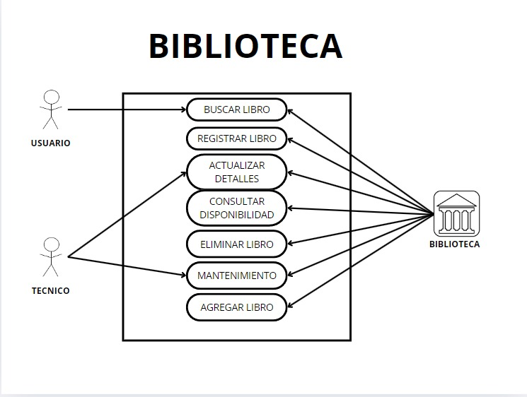

Gestión de libros
Descripción
Este módulo permite administrar toda la información relacionada con los libros disponibles en la biblioteca. Los usuarios pueden buscar libros mediante filtros como título, autor, ISBN, género, y palabras clave. Los bibliotecarios pueden registrar nuevos libros en el sistema ingresando detalles como título, autor, edición, editorial, y categoría. Además, se pueden realizar actualizaciones de información, como cambiar el estado de un libro a "no disponible" o "en reparación". El sistema también permite eliminar libros que ya no forman parte del catálogo y consultar estadísticas sobre la disponibilidad o popularidad de los libros.
